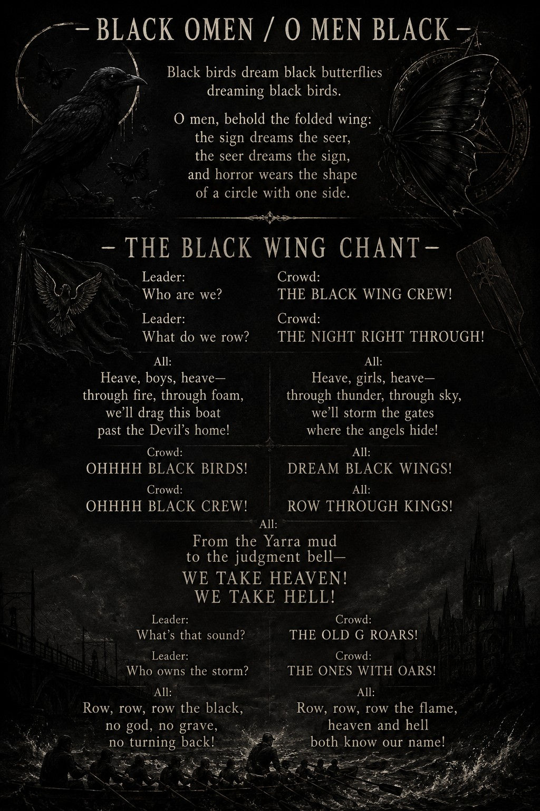

Blue $nake Studio · Music world · Neon Venom
Black Wing Crew Pack
A one-sheet for music leads, listeners, QR drops, YouTube traffic and street-promo backing copy. Dark chant, visual hooks, print assets and short-form video energy.

Clean description
Black Wing Crew is the music and moving-image branch of Blue $nake Studio: dark chant hooks, lyric posters, QR drops, Neon Venom visuals, symbolic birds, black butterflies, street print assets and YouTube-ready songs.
Black birds dream black butterflies.
Black butterflies dream black caterpillars.
Behind the folded wing, the sign dreams the seer.
The seer dreams the sign.
Row, row, row the black.
Keep the rhythm moving forward.
Use this for
- Music one-sheet.
- QR poster backing copy.
- Street sticker context.
- Lyric-sheet handout.
- YouTube / short-form video bio.
Core hooks
- Black birds / black butterflies.
- Folded wing / omen / sign.
- Dark shanty chant meets cyberpunk poster world.
- Neon Venom LP and visual music system.
Visual identity
Black cockatoo, crow/waahn energy, torii gates, Mt Fuji/Frankston bridges, neon venom, gold-on-blue B$S marks, QR portals and hand-to-hand print artefacts.
Next ask
Listen, watch, share, scan, print, remix a visual, request a lyric/poster pack or talk collaboration.
Contact
Email: bluesssnakestudio@gmail.com
Use subject: Black Wing Crew / Neon Venom enquiry
Short promo copy
Black Wing Crew is a mythic music world from Blue $nake Studio: black-bird omens, chant hooks, cyberpunk poster energy and QR-led releases. It is built to be listened to, printed, scanned and remembered.